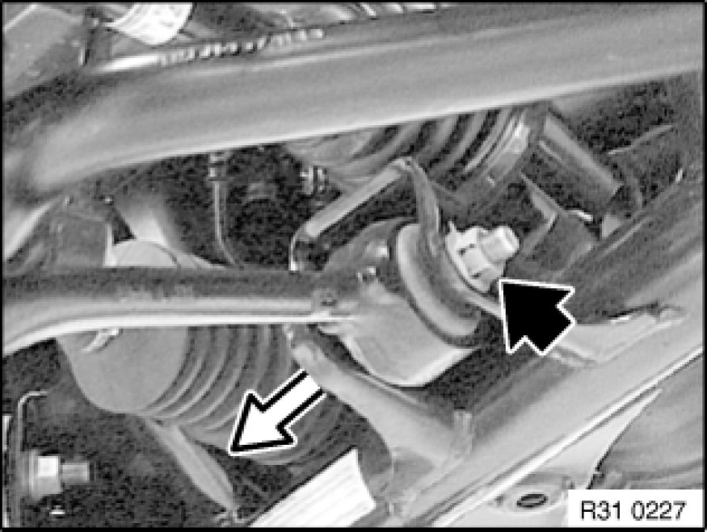
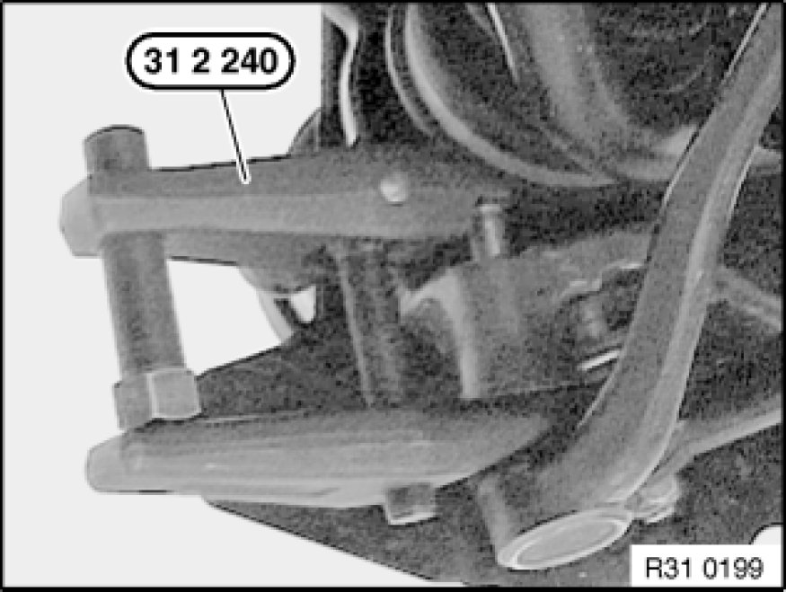

Front Axle
31 12 000 - Removing and installing/replacing left or right control arm

Special tools required:
- 31 2 240 31 2 240 Puller

Note:
If the control arm is detached from the front axle carrier, it is necessary after reinstallation to carry out a wheel/chassis alignment check.
Note:
Checking control arm:
Refer to Measuring play of wheel control joints Testing and Inspection.

Necessary preliminary tasks:
- Remove front wheel Removing or Installing Front or Rear Wheel
- If necessary, remove jointed rod of ride-height sensor from control arm

Release nut and remove bolt towards front.
Only on right side: If necessary, remove holder with ride-height sensor.
Installation:
Replace self-locking nut.
Tightening torque 31 12 2AZ Control Arms and Struts (Front).

Release nut by only 3 thread turns so that control arm is not flung away unchecked when forced off.
Press control arm off swivel bearing with special tool 31 2 240 31 2 240 Puller.
Unscrew nut and remove control arm.
Installation:
Keep journal on ball head and bushing in swivel bearing clean and free from oil and grease.
Replace self-locking nut.
Tightening torque 31 12 6AZ Control Arms and Struts (Front).
After installation:
- Perform chassis alignment check
- Carry out steering angle sensor adjustment Adjustments